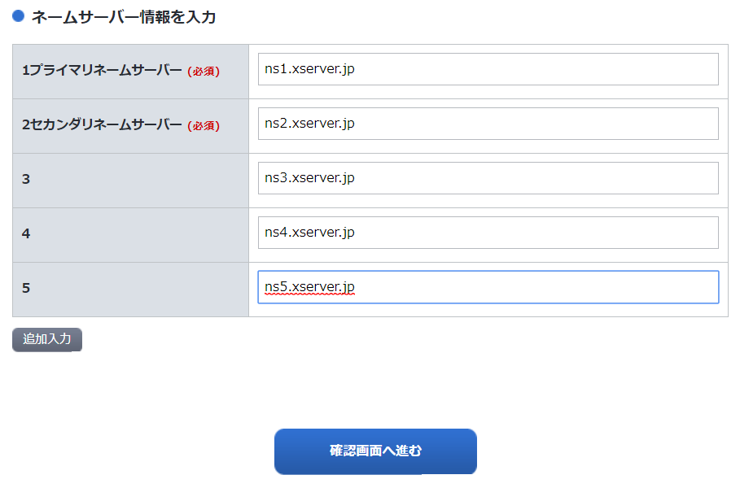

当ページではワードプレスやホームページを作る際に必要になってくる「ネームサーバー設定（DNS設定ともいいます）」 について、その設定方法について詳しく解説しています。

実際にネームサーバー設定を行うために必要なものは、ただ1つだけになります。
それは契約したレンタルサーバーが持っているサーバーのネームサーバー情報（ドメイン名）を確認することです。
この情報を確認し、それを契約してるドメイン会社のネームサーバー情報欄に入れて下さい。それがネームサーバー設定になります。
実際にエックスサーバーやロリポップが提供しているネームサーバー情報は以下になります。
| 会社名 | DNSサーバーのドメイン名 |
|---|---|
| エックスサーバー | ns1.xserver.jp ns2.xserver.jp ns3.xserver.jp ns4.xserver.jp ns5.xserver.jp |
ロリポップ | 1uns01.lolipop.jp uns02.lolipop.jp |
| スターサーバー | ns1.star-domain.jp ns2.star-domain.jp ns3.star-domain.jp |
ここからは実際の設定方法について解説していきたいと思います。
ネームサーバー設定と聞くと、とても難しそうに思えてしまう方も多いのではないでしょうか。 しかし、繰り返しますがネームサーバー設定はわずか2つだけで完了します。
単純に言うと、この作業だけでネームサーバー設定は完了します。
では実際に操作方法について解説してみましょう。
今回は、大手ドメイン会社である「お名前.com」でドメイン契約していると仮定します。
まずは「お名前.com」のサイトでID・パスワードを入力して管理画面にログインをします。 管理画面が出てきたら「ドメイン設定」＞「ネームサーバーの変更」をクリックしてみましょう。
次の画像の画面に切り替わりますので、「他のネームサーバーを利用」をさらに選択します。 するとネームサーバー情報（IPアドレス・アドレス名）を入れられる画面に遷移します。
まず、この画面まで行くことが準備１になります。
「お名前.com」ネームサーバー設定画面
設定画面まで辿り着いたら、「1プライマリネームサーバー」「2セカンダリネームサーバー」のところに 登録するレンタルサーバー各社のネームサーバー情報を入力します。
下の画面ではエックスサーバーのネームサーバー情報を入力しています。
契約レンタルサーバーのネームサーバー情報を入力する 
また、上の画像を見てもらうとわかりように、ネームサーバー情報を入力する箇所が合計で5行あります。
画像ではエックスサーバーのドメイン名を5行分入力していますが、基本的には「プライマリ」と「セカンダリ」の2行だけ追加すれば問題ありません。
そしてドメイン名を入力して、確認画面で「設定する」などにＯＫをクリックすれば ネームサーバー設定は完了します。
ここで問題になるのが「レンタルサーバーのネームサーバー情報はどこで調べるのか？」という点になります。
各ドメイン事業者のネームサーバー情報を調べる方法は3通りあります。
上記のいずれかの方法で調べることが出来ます。
Googleで調べられるものについては当ページでも一覧表にして紹介しています。ページ後半部分を参照下さい。
各レンタルサーバーのネームサーバー情報を一覧にしてみました。
| 会社名 | ドメイン名 |
|---|---|
| エックスサーバー | ns1.xserver.jp ns2.xserver.jp ns3.xserver.jp ns4.xserver.jp ns5.xserver.jp |
ロリポップ | uns01.lolipop.jp uns02.lolipop.jp |
| スターサーバー | ns1.star-domain.jp ns2.star-domain.jp ns3.star-domain.jp |
| さくらレンタルサーバー | ns1.dns.ne.jp ns2.dns.ne.jp |
| ヘテムル | dns0.heteml.jp dns1.heteml.jp |
ネームサーバー情報の設定を行う前にレンタルサーバー側で行ってもらいたいことがあります。 それは「独自ドメインの登録」です。
エックスサーバーの管理画面を例にとって説明してみたいと思います。
まず、エックスサーバーの管理画面で「ドメイン設定」を選択してください。
エックスサーバーの管理画面
「ドメイン設定」の画面に遷移したら、「ドメイン設定追加」をさらに選択します。
そこで独自ドメインを設定しましょう。
このように、独自ドメインを契約したらレンタルサーバー側で「ドメイン登録」を行わないといけません。
独自ドメインを登録する
ドメイン設定はネームサーバー設定と違い、時間がかからずすぐに反映されます。
「ネームサーバーの設定も終わったけれども、なかなか画面が反映されない・・・」
「お名前.com」でネームサーバー設定を「ＣＰＩ」から「エックスサーバー」に切り替えたとします。 この時に設定後すぐ切り替わるかというとそうではありません。
おおくのドメイン会社では「設定の反映完了まで25時間から72時間程度かかる場合があります」と記載されています。
そのため、設定後に3日待ってしまう方も多いと思いますが、 だいたい私の経験では設定変更して1時間～3時間もたてば、ネームサーバーの反映がおわってホームページが表示されるケースがほとんどです。
どれだけ時間がかかっても、まず半日もかかりません。 半日待っても画面が表示されないようであれば、なにか設定がおかしいのか調べ直してみたほうがいいかもしれません。
3時間たっても設定が完了しない、画面が表示されないといった場合は、
（１）ネームサーバー情報の再確認
（２）レンタルサーバー側でドメイン登録が終わっているか
に間違いがないかを確認しましょう。
まれに、Whois情報の設定間違いで表示が止まっていることもあります。 ドメイン会社から「Whois情報を誤表記している」とメールが来ていないかも確認しましょう。
取得しているドメインのネームサーバーがどのレンタルサーバーに向けて設定されているのか、 チェックツールで正確に確認する方法もあります。 確認するためのサイトがこちらです。
独自ドメインを入力して「検証」をクリックするだけで調べることができます。
ネームサーバー設定がどうしても苦手な方には、より簡単に設定ができる方法もあります。
それは「エックスサーバー」と「エックスドメイン」だったり、 「ロリポップ」と「ムームードメイン」というように 同じ会社が運営しているサーバーとドメイン会社をセットで契約をすると、 大抵ワンクリックでネームサーバーの設定ができます。